训练/推理双模式转置浮点存内计算零基础精讲：一套电路，前向反向通吃 A 28nm 192.3TFLOPS/W Accurate/Approximate Dual-Mode-Transpose Digital 6T-SRAM CIM Macro for Floating-Point Edge Training and Inference（ISSCC 2025 · Paper 14.5）
大多数 CIM 只做推理。但片上训练/微调（实时响应、省电、隐私）才是边缘 AI 的下一站。训练比推理多一个“反向传播（BP）”：误差梯度要乘转置后的权重矩阵——CIM 里“权重转置”是出了名的硬骨头。这篇中科院微电子所的工作用一个 28nm 转置数字 6T-SRAM CIM 宏解决：
- CWM-SRAM（循环权重映射）：权重按行循环右移存储，FF 读“行”、BP 读“对角”＝转置——一套单端口 SRAM、一套 MAC 电路，前向反向完全复用；
- SFME（有符号定点尾数编码）+ VWPA（向量级预对齐）：把 FP8/BF16/INT4/INT8 四种格式统一进 4b/8b 整数通路（首个四格式统一 FP-CIM），预对齐截断损失大幅降低；
- DMBP-MAC（精确/近似双模式位并行 MAC）：近似模式丢部分和 + 低位 OR → 速度 +12%、功耗 −31%（NMED 仅 5.3%），按应用自由切换。
实测：峰值 192.3 TFLOPS/W（FP8，近似模式，0.55V）、2.5ns 访问时间。
- 训练 = FF + BP：前向（FF）和推理一样；反向（BP）要算“误差梯度 × 权重转置”。转置意味着读数据的“方向”变了——在普通 SRAM 里，行向访问容易、列向（转置）访问极难。
- “循环映射”是转置的巧解：把每行权重循环右移存储后，读“对角线”正好等于读“转置后的行”。存储没变、只改读取方向 → 单端口 SRAM 就能同时服务 FF 和 BP。
- 浮点可以“伪装”成整数：预对齐后，浮点尾数变成“有符号定点数”（SFME），4b/8b 的整数乘法器直接复用——FP 的 MAC 硬件几乎免费，这就是“一格式四精度”的电路基础。
§0.1摘要逐句精读
| 原文（摘录） | 人话解释 |
|---|---|
| “On-device training offers advantages such as real-time response, power saving, and user-privacy protection. The training process primarily involves two phases: feed-forward (FF) and backpropagation (BP). BP requires the multiplication of the error gradient with the transposed weight matrix” | 片上训练的好处（实时/省电/隐私）；训练 = 前向 + 反向，反向需要“梯度 × 转置权重”。 |
| “Previous work uses separate circuits for FF and BP, thereby diminishing area and energy efficiency due to lack of MAC circuit reuse” | 挑战 1：前作 FF/BP 两套电路，MAC 不复用 → 面积能效双输。 |
| “Prior work is limited to integer (INT) formats; research indicates that INT representation can significantly reduce accuracy during training” | 挑战 2：前作只支持 INT，而 INT 训练精度低（需要 FP）。 |
| “A cyclic-weight-mapping 6T-SRAM array (CWM-SRAM) that enables array transpose operations thus reusing MAC circuits for FF and BP” | 方案 1：循环权重映射 SRAM → 转置操作 → FF/BP 复用 MAC。 |
| “A DCIM architecture with a signed fixed-point mantissa encoding (SFME) and a vector-wise pre-alignment (VWPA) that supports FP8, BF16, INT4, and INT8” | 方案 2：SFME + VWPA → 四种格式统一（首个）。 |
| “An accurate/approximate dual-mode bit-parallel MAC circuit (DMBP-MAC)… to improve MD, access speed, AF, and EF” | 方案 3：精确/近似双模式位并行 MAC → 提升密度/速度/面积/能效。 |
§0.2论文的核心贡献清单
- CWM-SRAM 循环权重映射：单端口 6T-SRAM（1 端口 4b/单元 64×64），FF 读行/BP 读对角 → MAC 电路完全复用（对比前作 [7,8] 省面积省功耗）；
- SFME + VWPA：首个同时支持 INT4/INT8/FP8/BF16 的 FP-CIM；VWPA 让预对齐截断窗口最小化，精确模式精度优于逐层预对齐 [1]；
- DMBP-MAC：BAM 近似乘法器 + LOA 加法树，精确/近似双模（+12% 速度 / −31% 功耗 / NMED 5.3%），中心对称布局缓解布线；
- 实测成绩：192.3 TFLOPS/W（FP8）、2.5ns 访问；FP8 是“精度 × 能效”最佳格式（精度略低于 INT8/BF16 但远高于 INT4，能效最优）。
完全零基础：按 01→09 顺序读，重点玩 3 个交互仿真、看 3 个视频，约 60 分钟。这篇的“转置读取”和“SFME 统一格式”是最值得细品的两个设计。
§1背景：片上训练（On-Device Training）与“转置”难题
① 实时响应：设备端即时微调，不用等云端往返；② 省电：不需要把数据传到云端（上传下载都是能量）；③ 隐私：用户数据（照片、语音、签名）不出设备。这就是“边缘 AI 的下一站”。
训练比推理多出来的核心运算是 BP：误差梯度 G × 转置权重矩阵 Wᵀ。矩阵转置在普通 SRAM CIM 里意味着“按列访问”——而 SRAM 天生按行组织，列向访问要么做双端口阵列（面积大）、要么做两套电路（不复用）。这就是“转置 CIM（T-CIM）”要解决的核心矛盾。
§2转置 CIM（T-CIM）的三大挑战
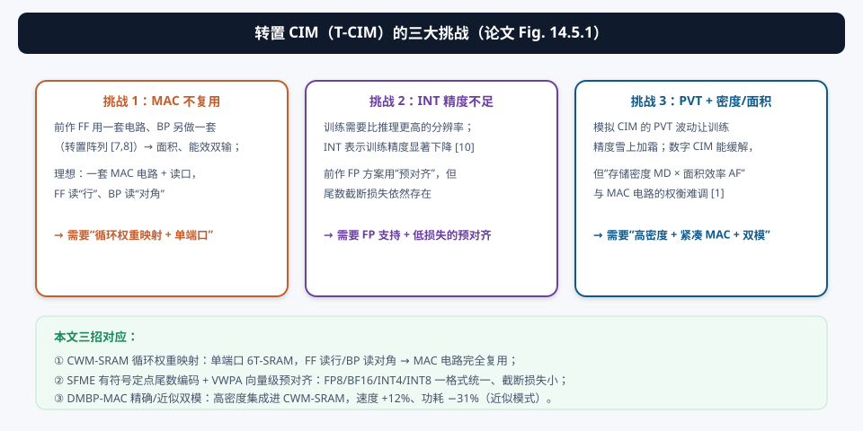
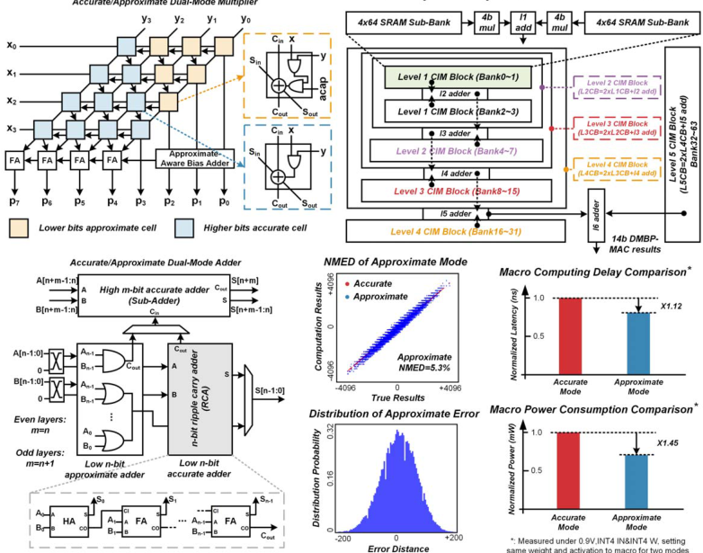
| 挑战 | 本质 | 本文对策 |
|---|---|---|
| ① MAC 不复用 | 前作 FF/BP 各一套电路（转置阵列 [7,8]） | CWM-SRAM：单端口 + 循环映射，一套 MAC 通吃 |
| ② INT 精度不足 | INT 训练精度低；预对齐 FP 有截断损失 | SFME + VWPA：四格式统一 + 最小截断窗口 |
| ③ PVT + 密度/面积 | 模拟 CIM 受 PVT 影响；数字 CIM 的 MD/AF 权衡难 | DMBP-MAC：双模位并行 + 中心对称布局，紧凑集成进 SRAM |
§3转置的概念：读“行”是 W，读“对角”是 Wᵀ
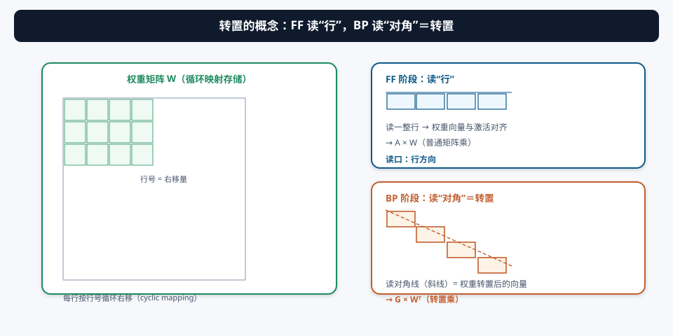
要理解 CWM-SRAM，先理解一个几何事实：矩阵的转置就是“沿主对角线翻折”。W 的第 r 行第 c 列元素，在 Wᵀ 里位于第 c 行第 r 列。所以：
- 读 W 的“第 r 行” = 正向权重向量（FF 用）；
- 读 W 的“第 c 条对角线” = Wᵀ 的第 c 行 = 转置权重向量（BP 用）。
问题是：SRAM 位线/字线按行组织，对角线访问在普通阵列里要绕很远（每个单元都要单独连到读口）。CWM-SRAM 用“循环映射”把这个难题化解成“行内移位 + 读使能选路”（§4）。
§4创新①：CWM-SRAM 循环权重映射 —— 转置的“几何巧解”
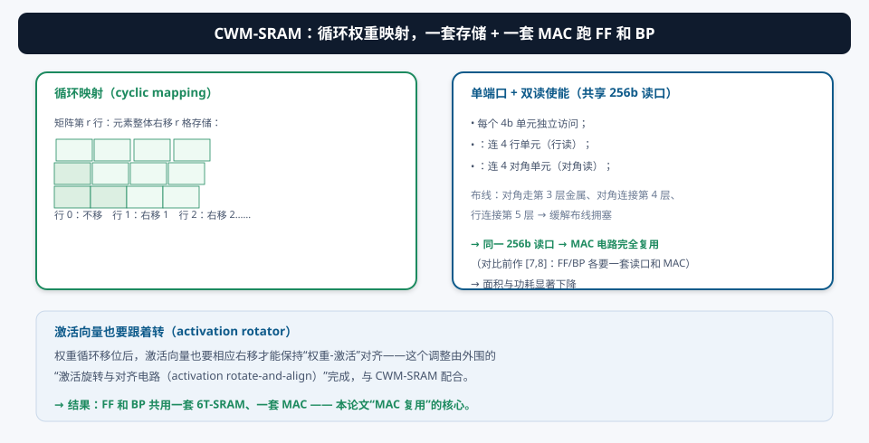
存储侧（循环映射）：权重矩阵的第 r 行，存储时整体循环右移 r 格。为什么要移？因为移位之后，原本“列方向”的转置关系在存储网格里变成了“对角线方向”——而对角线可以通过“每行错位一格”的连线来访问。
读侧（双读使能）：
- FF 读使能：连接 4 行单元 → 读出权重行（与激活向量对齐后做 A×W）；
- BP 读使能：连接 4 对角单元 → 读出“转置后的权重向量”（做 G×Wᵀ）；
- 两个使能共用 256b 读口 → 同一套 MAC 电路服务 FF 和 BP。
布线技巧：对角连接走第 3 层金属、对角连接在第 4 层、行连接在第 5 层 → 缓解布线拥塞（避免前作 [7,8] 那种“为转置加大量 MAC 电路和读口”的做法）。
权重被循环移位了，激活向量也要相应右移才能保持“权重-激活”的元素对齐——这个调整由外围的“激活旋转与对齐电路（activation rotate-and-align）”完成。存储不动、读方向改、激活配合转——三方配合才让“转置”在单端口 SRAM 上成立。
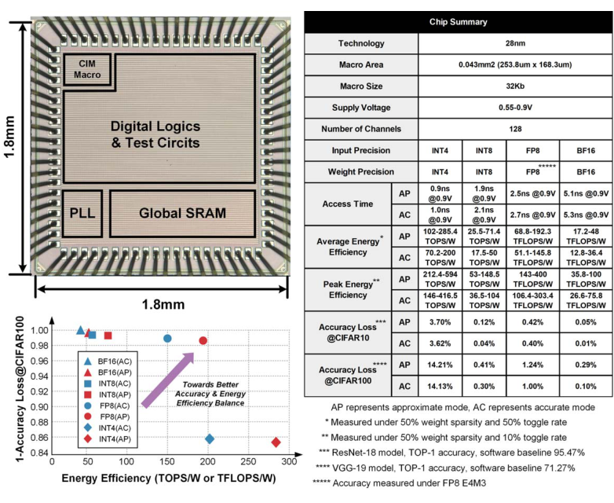
§5创新②：SFME + VWPA —— 浮点“伪装”成整数 + 最小截断窗口
5.1 SFME：有符号定点尾数编码
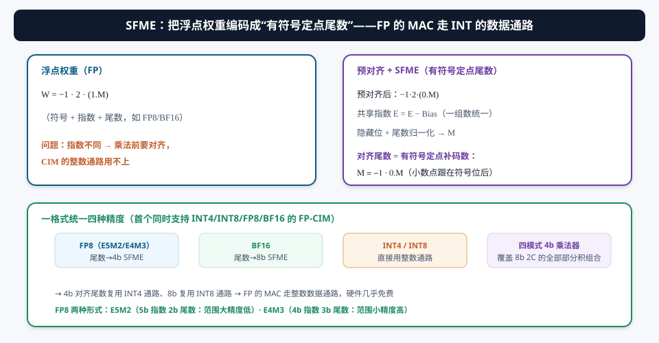
FP 的 MAC 贵在“指数对齐”。SFME 的招数是把对齐提前做完、把结果变成定点数：
- 共享指数 Es = Emax − Bias（同一组数据统一）；隐藏位+尾数归一化为 Mn；
- 对齐尾数 Ma 是“有符号定点补码数”（小数点跟在符号位后）→ 4b 复用 INT4 通路、8b 复用 INT8 通路；
- 四模式 4b 乘法器覆盖 8b 2C 乘法的全部 4b 部分积组合 → 一个乘法器服务 4b/8b。
5.2 VWPA：向量级预对齐
预对齐的精度损失来自“截断”：指数跨度越大，尾数被截掉的位数越多。VWPA 的关键观察：同一个向量（同一输出通道）里的元素数量级往往接近（权重初始化、批归一化都让分布集中），而不同层/通道差异很大。所以按向量对齐比按整层对齐的指数跨度小得多 → 截断窗口更小 → 精度更高（精确模式下优于逐层预对齐 [1]）。
§6创新③：DMBP-MAC —— 精确/近似双模式位并行 MAC
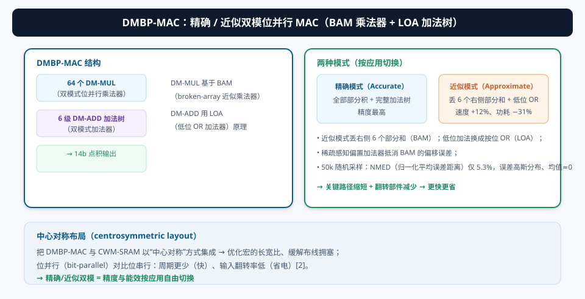
训练要精度、推理要速度——DMBP-MAC 用“双模式”同时满足：
- 精确模式：全部部分积 + 完整加法树，精度最高（训练/精度敏感场景）；
- 近似模式：DM-MUL 丢弃右侧 6 个部分和（BAM 思想），DM-ADD 把低位加法换成按位 OR（LOA 思想）；稀疏感知偏置加法器抵消 BAM 的偏移误差。
关键路径缩短 + 翻转部件减少 → 速度 +12%、功耗 −31%（对比精确模式）；50,000 组随机采样 NMED 仅 5.3%，误差呈高斯分布、均值接近零（说明是“无偏”的近似——平均来看不偏向任何方向，网络训练能容忍）。

§7系统架构与四种格式
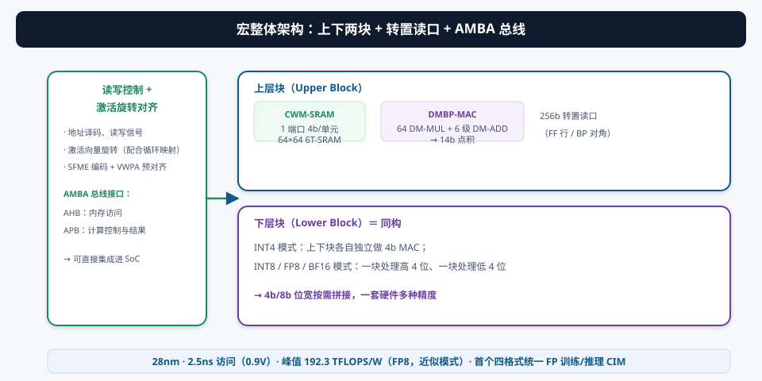
- 读写控制电路：地址译码、读写信号、模式配置；
- 激活旋转与对齐电路：SFME 编码 + VWPA 预对齐 + 激活向量旋转（配合循环映射）；
- 上下两块 CWM-SRAM + DMBP-MAC：INT4 模式各自独立；INT8/FP8/BF16 模式一块处理高 4 位、一块处理低 4 位；
- AMBA 总线：AHB 走内存访问、APB 走计算控制与结果 → 可直接集成进 SoC。
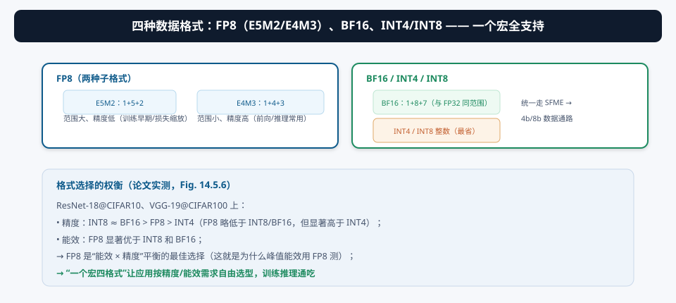
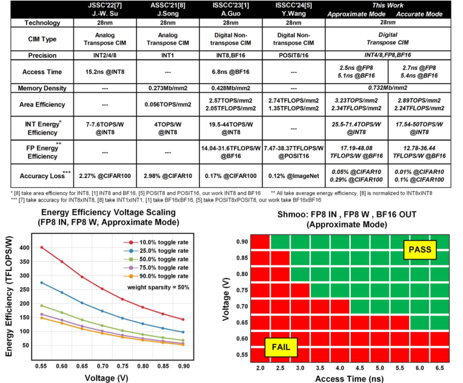
§8实测与对比：28nm 芯片的成绩单
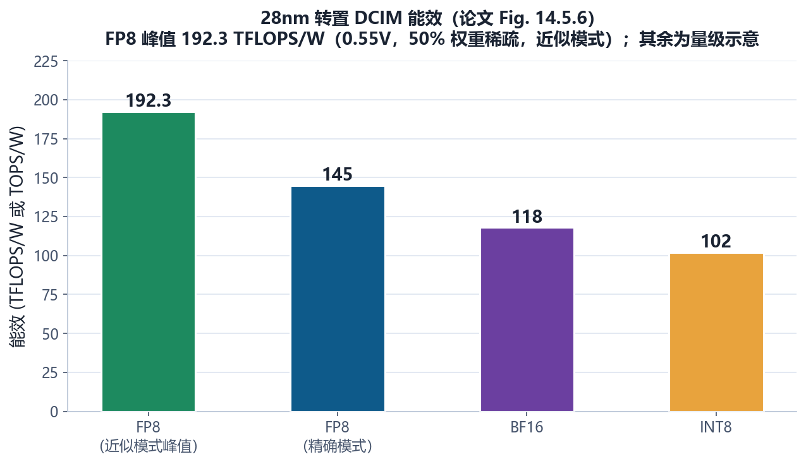
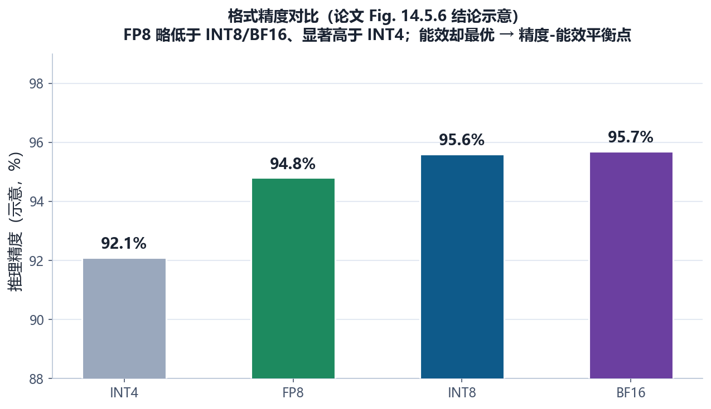
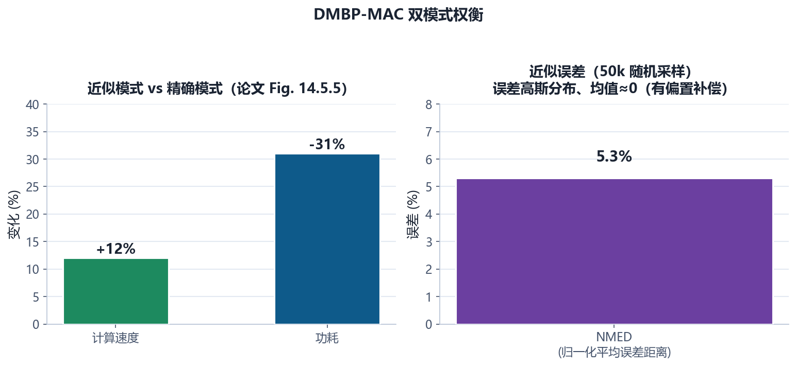
- 访问时间：2.5 ns @ 0.9V（FP8 输入、FP8 权重、BF16 输出）；
- 峰值能效：192.3 TFLOPS/W（FP8，近似模式，0.55V，50% 权重稀疏 + 50% 翻转率）；
- 首个四格式统一：INT4/INT8/FP8/BF16 一个宏全支持（训练+推理）；
- 精度：ResNet-18@CIFAR10、VGG-19@CIFAR100 上 FP8 略低于 INT8/BF16 但显著高于 INT4。

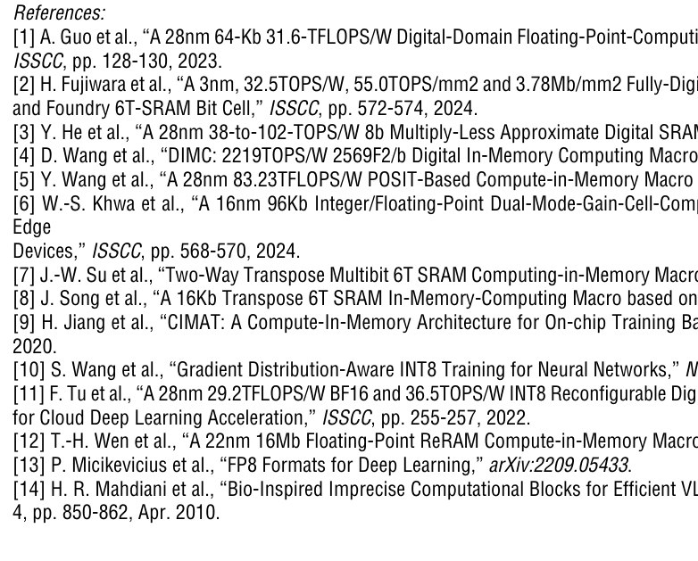
① 峰值 192.3 TFLOPS/W 的测试条件非常“友好”（50% 权重稀疏 + 50% 翻转率 + 近似模式 + 0.55V），和“训练精度最优的精确模式”不是同一个数——应用时先看清模式；② “FP8 能效最优”依赖其 4b 对齐尾数复用 INT4 通路，位宽越低位宽越省，这是结构使然不是魔法；③ 精度对比是在两个特定数据集（CIFAR10/100）上测的，对更大模型/数据集要重新评估。
§9未来研究方向 · 术语表 · 参考资料
9.1 未来研究方向
- 更深的训练支持（完整反向流水线）：本文做的是 MAC 级 FF/BP 复用。完整训练还需要梯度计算（G = δ×Xᵀ）、权重更新（W -= ηG）、优化器状态（Adam 动量）——把整条训练流水线搬上 CIM（与 17 号论文“one-shot FP 推理 + 设备端微调”方向呼应）；
- 转置方案的通用化：CWM-SRAM 的“循环映射 + 对角读”只适用于方阵/特定形状。扩展到任意形状矩阵、块转置、注意力 QKV 转置，需要更通用的“数据布局变换”机制；
- SFME 的格式族扩展：FP8/BF16 之后是 MXFP（06 号论文）、FP4——SFME 能否继续“折叠”更低位宽的浮点？截断窗口的数学建模（VWPA 的边界）值得深入研究；
- 近似计算的精度理论：NMED 5.3% 是经验值。能否建立“近似乘法器误差 → 训练收敛/最终精度”的解析模型？有了模型才能按层/按迭代动态切换精确/近似；
- 稀疏训练：训练中的梯度天然稀疏（很多接近 0）。把 02 号论文的 NIM/动态启动器思路引入 BP 路径（跳过零梯度），训练能效还能翻倍；
- 端到端联邦/个性化微调 SoC：CIM 宏 + RISC-V 控制 + eNVM（05 号论文路线）——做一个“能感知、能推理、能训练、能记住”的完整边缘芯片。
9.2 术语表
- FF（Feed-Forward，前向）
- 与推理相同的前向传播。
- BP（Backpropagation，反向传播）
- 误差梯度回传；需要 × 转置权重矩阵。
- T-CIM（Transpose CIM）
- 支持权重转置读取的存内计算。
- CWM-SRAM（Cyclic-Weight-Mapping SRAM）
- 循环权重映射：每行按行号右移存储，转置=读对角。
- 循环映射
- 矩阵第 r 行整体右移 r 格的存储方式。
- 读使能（Read-Enable）
- FF 读使能连 4 行、BP 读使能连 4 对角。
- SFME（Signed Fixed-point Mantissa Encoding）
- 有符号定点尾数编码：预对齐后尾数变成定点补码数。
- VWPA（Vector-Wise Pre-Alignment）
- 向量级预对齐：同向量元素分布接近 → 截断窗口小。
- DMBP-MAC（Dual-Mode Bit-Parallel MAC）
- 精确/近似双模式位并行 MAC。
- BAM（Broken-Array Multiplier）
- 断阵近似乘法器：丢右侧部分和。
- LOA（Lower-part OR Adder）
- 低位 OR 加法器：低位按位或代替加法。
- NMED（Normalized Mean Error Distance）
- 归一化平均误差距离；本文 5.3%。
- FP8
- 8 位浮点：E5M2（范围大精度低）或 E4M3（范围小精度高）。
- AMBA / AHB / APB
- ARM 总线标准：AHB 内存访问、APB 控制。
- 中心对称布局
- DMBP-MAC 与 CWM-SRAM 中心对称集成，优化长宽比、缓解布线。
9.3 参考资料
- Y. Yuan, B. Zhang, et al., “A 28nm 192.3TFLOPS/W Accurate/Approximate Dual-Mode-Transpose Digital 6T-SRAM CIM Macro for Floating-Point Edge Training and Inference,” ISSCC 2025, Paper 14.5. DOI: 10.1109/ISSCC49661.2025.10904659
- J.-W. Su et al., “Two-Way Transpose Multibit 6T SRAM Computing-in-Memory Macro for Inference-Training AI Edge Chips,” IEEE JSSC, vol. 57, no. 2, 2022.（转置前作 [7]）
- J. Song et al., “A 16Kb Transpose 6T SRAM In-Memory-Computing Macro based on Robust Charge-Domain Computing,” A-SSCC 2021.（转置前作 [8]）
- P. Micikevicius et al., “FP8 Formats for Deep Learning,” arXiv:2209.05433.（FP8 定义 [13]）
- A. Guo et al., “A 28nm 64-kb 31.6-TFLOPS/W Digital-Domain FP Computing-Unit and Double-Bit 6T-SRAM CIM Macro…,” ISSCC 2023, pp. 128-130.（预对齐前作 [1]）
- H. R. Mahdiani et al., “Bio-Inspired Imprecise Computational Blocks for Efficient VLSI Implementation of Soft-Computing Applications,” IEEE TCAS-I, vol. 57, no. 4, 2010.（LOA 原理 [14]）
- F. Tu et al., “A 28nm 29.2TFLOPS/W BF16 and 36.5TOPS/W INT8 Reconfigurable Digital CIM Processor…,” ISSCC 2022, pp. 255-257.（[11]）